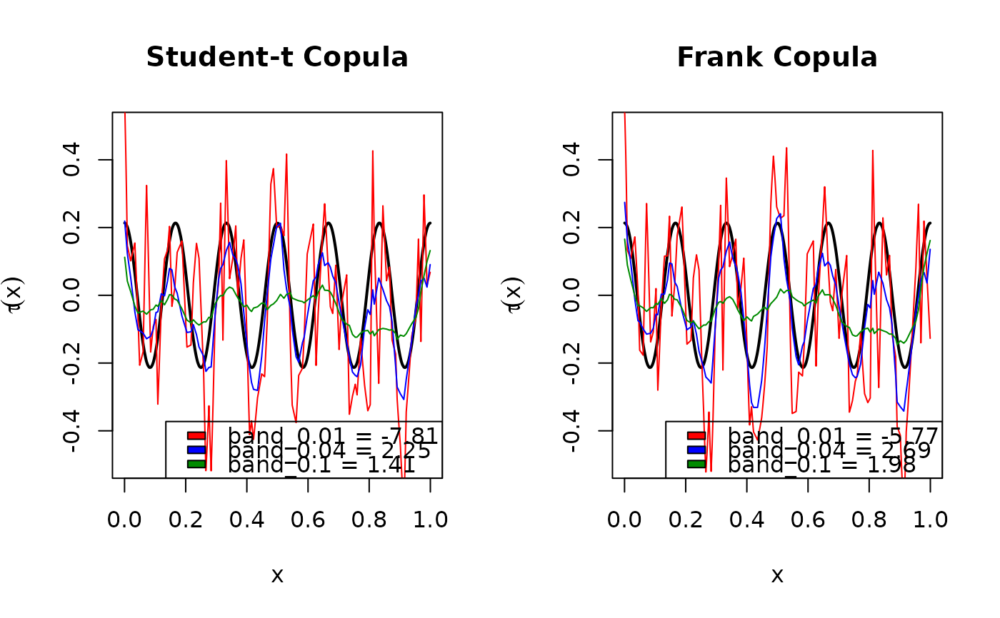

Selects among a set of bandwidths and/or copula families the one which maximizes the cross-validated local likelihood. See CondiCopLikCV() for details.
CondiCopSelect(
u1,
u2,
family,
x,
xind = 100,
degree = 1,
nu,
kernel = KernEpa,
band,
nband = 6,
optim_fun,
cv_all = FALSE,
full_out = TRUE,
cl = NA
)Vector of first uniform response.
Vector of second uniform response.
Vector of integers specifying the family set. See ConvertPar().
Vector of observed covariate values.
Specification of xind for each bandwidth. Can be a scalar integer, a vector of nband integers, or a list of nband vectors of integers.
Integer specifying the polynomial order of the local likelihood function. Currently only 0 and 1 are supported.
Optional vector of fixed nu parameter for each family. If missing or NA get estimated from the data (if required)
See CondiCopLocFit().
Vector of positive numbers specifying the bandwidth value set.
If band is missing, automatically choose nband bandwidth values spanning the range of x.
If FALSE, evaluate the CV likelihood at only the leave-one-out observations specified by xind. Otherwise, interpolate the leave-one-out estimates of eta to all values in x, and evaluate the CV likelihood at all observations.
Logical; whether or not to output all fitted models or just the selected family/bandwidth combination. See Value.
If full_out = FALSE, a list with elements family and bandwidth containing the selected value of each. Otherwise, a list with the following elements:
cvA data frame with nBF = length(band) x length(family) rows and columns named family, band, and cv containing the cross-validated likelihood evaluated at each combination of bandwidth and family values.
xThe sorted values of x.
etaA length(x) x nBF matrix of eta estimates, the columns of which are in the same order as the rows of cv.
nuA vector of length nBF second copula parameters, with zero if they don't exist.
# simulate data
set.seed(123)
family <- 5 # Frank copula
n <- 1000
x <- runif(n) # covariate values
eta_fun <- function(x) 2*cos(12*pi*x) # copula dependence parameter
eta_true <- eta_fun(x)
par_true <- BiCopEta2Par(family, eta = eta_true)
udata <- VineCopula::BiCopSim(n, family=family,
par = par_true$par)
# bandwidth and family selection
bandset <- c(.01, .04, .1) # bandwidth set
famset <- c(2, 5) # family set
n_loo <- 100 # number of leave-one-out observations in CV likelihood calculation
system.time({
cvsel <- CondiCopSelect(u1= udata[,1], u2 = udata[,2],
x = x, family = famset, band = bandset,
xind = n_loo)
})
#> user system elapsed
#> 1.778 0.017 1.796
# compare estimates to true value
xseq <- cvsel$x
famsel <- cvsel$cv$family
bandsel <- cvsel$cv$band
etasel <- cvsel$eta
clrs <- c("red", "blue", "green4")
names(clrs) <- bandset
plot_fun <- function(fam) {
nband <- length(bandset)
if(fam == 2) {
famind <- 1:nband
main <- "Student-t Copula"
} else {
famind <- nband+1:nband
main <- "Frank Copula"
}
plot(xseq, BiCopEta2Tau(family, eta = eta_fun(xseq)),
type = "l", lwd = 2, ylim = c(-.5, .5),
xlab = expression(x), ylab = expression(tau(x)),
main = main)
for(ii in famind) {
lines(xseq, BiCopEta2Tau(fam, eta = etasel[,ii]),
col = clrs[as.character(bandsel[ii])], lwd = 1)
}
legend("bottomright", fill = clrs,
legend = paste0("band_", bandsel[famind],
" = ", signif(cvsel$cv$cv[famind], 3)))
}
oldpar <- par(mfrow = c(1,2))
plot_fun(2)
plot_fun(5)

par(oldpar)